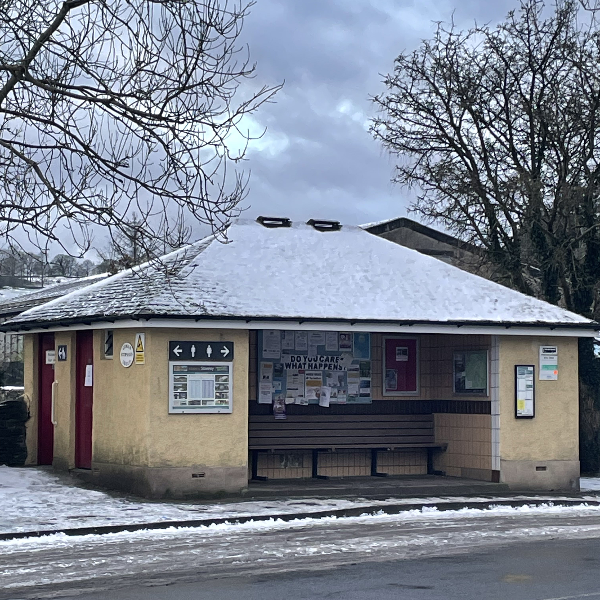

ARTIST CALL-OUT FOR PAID COMMISSION AND EXHIBITION
Guttersnipe presents: destruction/care, a micro-exhibition of emerging artists exploring rural youth frustration and community custodianship at Staveley bus shelter and loos.
24th June 2024 - 4th August 2024.
For more information see guttersnipe.projects on instagram, or email us at guttersnipeprojects[at]gmail.com.